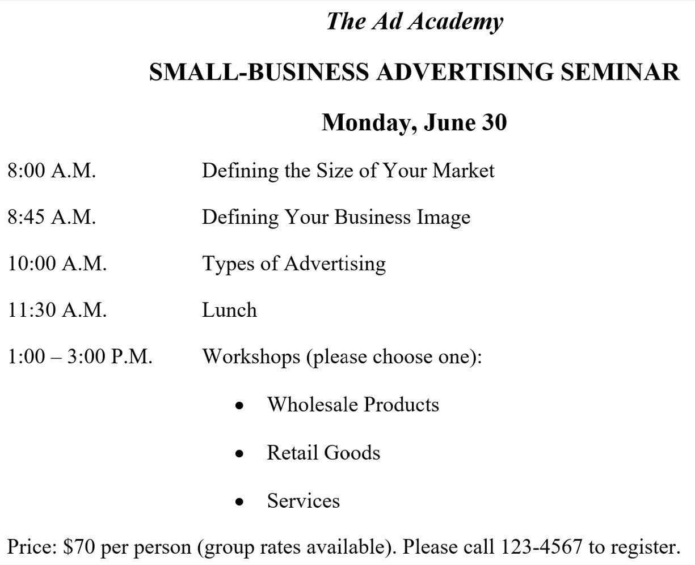
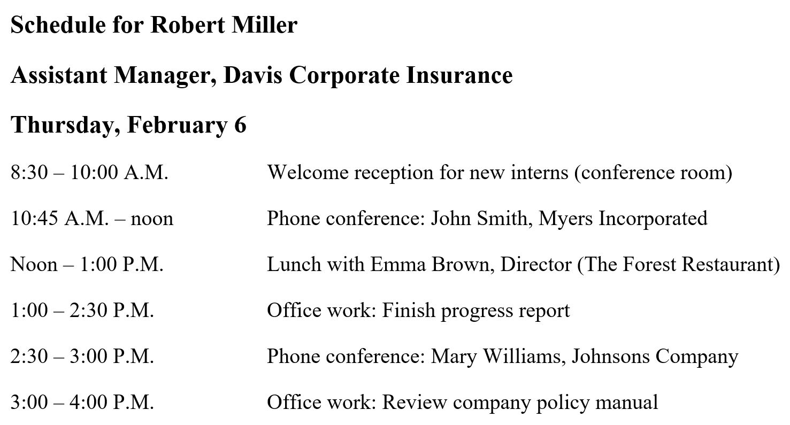

Danh Sách Toàn Bộ {{ maxSlideNum }} Trang {{ slideSet === 'speaking' ? 'Speaking' : 'Writing' }}:
{{ currentSlide.title }}
{{ currentSlide.englishToRead }}
{{ currentSlide.notes }}
{{ currentPassage.title }}
{{ currentPassage.text }}
{{ pic.title }}
💡 {{ pic.description_hint }}
{{ q.question }}


{{ currentTopic.question }}
- {{ d }}
{{ currentTopicChoice === 'A' ? currentTopic.choiceA_speech : currentTopic.choiceB_speech }}
Viết đúng 1 câu hoàn chỉnh chứa cả 2 từ khóa cho sẵn. Có thể chia thì động từ (hiện tại tiếp diễn, tương lai...) hoặc số ít/số nhiều.
Tranh {{ item.id }} / 10
{{ item.context }}
"Do you agree or disagree with the following statement?
The internet is more useful than books as a source of information. Give reasons and examples."
{{ p }}
{{ p }}
Phòng Thi Thử Đầy Đủ (Mock Exam Simulator)
Mô phỏng chính xác phòng thi ETS TOEIC Speaking & Writing Chuẩn Đầu Ra Nội Bộ.
Tự động chuyển câu hỏi, tính giờ chuẩn xác và tự động ghi âm giọng nói Speaking để nghe lại sau bài thi!
🎯 Bảng Điểm & Chuẩn Đầu Ra Nội Bộ (DGNLNNCDRNB)
| Phần thi | Số câu | Điểm tối đa | Yêu cầu Đạt Band 3 (B1) | Yêu cầu Đạt Band 4 (B2) |
|---|---|---|---|---|
| Writing (Viết) | 8 câu | 28 Điểm | ≥ 16.8 / 28 điểm (60%) | ≥ 21.0 / 28 điểm (75%) |
| Speaking (Nói) | 11 câu | 200 Điểm | ≥ 120 / 200 điểm (60%) | ≥ 150 / 200 điểm (75%) |
🗣️ Khung Mẫu Câu Speaking Cứu Cánh:
My favorite restaurant is [Name] in [Place] because [Reason]. Also, [Reason 2].
Yes, of course. It costs [Price] to attend... / It will be held at [Place].
No, actually there are only [Number]... / Instead, you are having...
Personally, I would rather [A/B]. The reason I feel this way is that... Therefore, I think [A/B] is more preferable.
✍️ Khung Mẫu Câu Writing Part 2 (Email):
Thank you for your email regarding [Subject]. I am writing to respond to your request.
First, [Info 1]. Second, [Info 2]. Third, [Info 3].
I have two questions: First, [Question 1]? Second, [Question 2]?
Could you please send me [Request Item]? It would help me a lot.